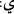

( 100 + : 600 + 400 + 2 + 3 + 2 + 10 = 1117)
Onların duâlarının sonu Hamd âlemlerin Rabbi Allah’a mahsustur, sözüdür.
[277]. Müslim, Salât, 222; Ebû Dâvûd, Vitr 5; Tirmizî, Deavât 112; Nesâî, Tatbîk 47,
71; İbn Mâce, İkâme 117; Muvatta’, Kur’ân 31; Müsned, I, 58, 96, 118, 150.
[278]. Ebû Dâvûd, Edeb 100-101/5067; Tirmizî, Deavât 14/3392; Müsned, I, 9, 10,
11.
[279]. Buhârî, İlim, 38.
[280]. Benzer bir ifâde için bkz. Tirmizî, Tahâret, 43/57.
[281]. Müslim, Selâm, 68.
[282]. Bkz. Ebû Dâvûd, Tıb, 4; İbn Mâce, Tıb, 21.
[283]. Müslim, Münâfikîn 69, 70; Tirmizî, Radâ 17; Nesâî, Nisâ 4; Dârimî, Rikâk 25,
66; Müsned, I, 257, 397, 401.
[284]. Buhârî, Fedâilü’l-Kur’ân 14; Müslim, Selâm 51; Ebû Dâvûd, Edeb 98;
Tirmizî, Duâ 21; İbn Mâce, Duâ 15; Muvatta’, Ayn 10.
[285]. Hatîb el-Bağdâdî, Târîhu Bağdâd, thk. Mustafa Abdülkadir Atâ, Beyrut:
Dâru’l-Kütübi’l-İlmiyye, 1417, IX, 308.
[286]. Nitekim İbn Abbâs (r.a) bu hususa işâretle şöyle demiştir: “Duada secîden
kaçın. Zira ben, Rasûlullah (s.a.) ve ashâb-ı kirâm devrinde yaşadım, onlar böyle bir
şey yapmıyorlardı.” (Buhârî, Deavât, 20)
[287]. Bu rivâyetin “münker” olduğu söylenmiştir. Yani uydurma bir rivâyet olması
kuvvetle muhtemeldir. Bkz. İbn Hacer, Lisânü’l-Mîzân, III, 509/3218.
[288]. Irâkî bu rivâyetin “mu‘dal” olduğunu söyler. Yani senedinden birbiri ardınca
iki veya daha fazla râvi düşmüştür, bu sebeple de çok zayıftır. Bkz. Tahrîcu ehâdîsi
İhyâi Ulûmi’d-Din, II, 694.
[289]. Âl-i İmrân, 3/37.
[290]. Meryem, 19/4.
Düzenleme
Yunus YAZICI
05.03.2020 Altunizade